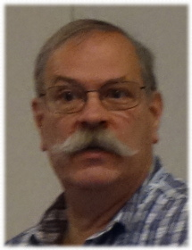
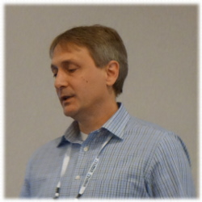

A storage standards update
The opening plenary at the 2016 Linux Storage, Filesystem, and Memory Management Summit (LSFMM) was an update from Fred Knight and Peter Onufryk on some of the relevant storage standards. Knight covered changes that are coming from the T10 (SCSI) and T13 (ATA) technical committees, while Onufryk talked about changes in the NVM Express (NVMe) interface specification for SSDs.
T10 and T13
Knight began with "conglomerates", which is a feature that has been in the T10 standard for a while. It is a way to group logical units. The 64-bit logical unit number (LUN) is split into two pieces: a major number, which identifies the group (conglomerate), and a minor number that identifies the unit within the group. There are new SCSI commands (BIND, UNBIND, ...) to create and manage these conglomerates.
The WRITE ATOMIC and WRITE SCATTER commands were up next. The former will either write all of the data or none of it. Some think that is how SCSI currently works, but if a write returns an error, there is no guarantee of how much data has been written.

WRITE SCATTER allows specifying logical block address (LBA) and length pairs, followed by the data for each segment, and will write the segments. There are no guarantees of atomicity, however, for the entire scatter write. Developers have asked for scatter and atomic to be combined somehow, but that made the storage vendors pull their hair out, Knight said, so the T10 committee said "no way". One thing that could be added that "may be useless" is to guarantee that each individual segment will either be written or not in its entirety. But the order of the writes is not known, so an error will indicate that some or all of the writes were not done.
There were complaints from the audience that some vendors could do atomic scatter writes, but that the large vendors don't want to do so, which is unfortunate. Knight said creating the standard for it is not the hard part—it is getting the vendors to agree to implement it.
Write streams are a way to associate writes so that the data ends up physically "close" on the device. Its origin is in current flash hardware that can be more efficient if writes to the same file end up in the same erase blocks, rather than scattered in many all over the drive. The number of streams is vendor dependent; it is currently up to 255, but there are vendors that want to have much lower limits. There is a reserved byte in the command to potentially expand the stream ID to 16 bits. It is a feature that is focused on supporting current hardware, so it is unclear how long it will stay relevant as flash hardware evolves in coming years, he said.
SCSI universally unique IDs (UUIDs) are assigned to vendors by the IEEE but, with the advent of software-defined storage (SDS), there needs to be a way to generate these IDs. The standard has been updated so that SDS devices can create an ID for their use. This was a feature that came directly from the Linux community, Knight said.
"Hints" for I/O (which are called "logical block markup" in T13) give information to the device about the expected access pattern for the data. The device is not obligated to remember or act on the hints; there are a bunch that are listed in the standards, but there are only two or three that make a difference. One of those is a way to "tag" I/O operations, which can, for example, separate operations for keys, data, and metadata that will help make databases run faster.
There was a question about why both streams and hints were supported, as it seems that they do much the same thing. But Knight said that streams are meant to place the data in the stream physically close on the device, while hints are meant to indicate the access patterns for the data. They can be used together, but hints can be ignored by the device.
There are some new log pages for additional statistics and counters, including counts of misaligned I/Os (e.g. 512-byte writes to a device with a 4KB block size) and compression and deduplication statistics. There is a new application tag mode page for the protection information that is used for data integrity, as well. The application tag can be placed in that page and does not need to be sent with the protection information on each block.
Next up was "depop" (or depopulation), which is a way to remove a portion of a device based on the failure of a head or other element. There are proposals for depop being worked on in T10, T13, and NVMe, Knight said. For today's 10TB or 20TB drives, if some component in the device goes bad, people want to keep using it. Manufacturers are already doing this; if they make a 10TB drive and find that 4TB are bad, they sell it as a 6TB drive to consumers.
Offline depop is effectively just a reformat of the drive for its new capacity. There is work on online depop going on, but there are "some interesting problems to be solved". The organization of logical blocks on a device is such that loss of a head (or a die on an SSD) does not equate to a simple range of LBAs, so the drive will need to report the list of bad LBAs to the host. Knight said that the committees are interested in any input that Linux developers can provide.
Knight closed his portion of the talk by noting that he has some amount of his time available to work with the Linux community to take its ideas to the standards bodies. He said that protection information without an application tag that he mentioned earlier was a suggestion from outside, as was the idea of hybrid drives that are partially regular disks and partially shingled magnetic recording (SMR) drives. He encouraged those interested to give him ideas to take back to the committees.
NVMe

Onufryk introduced the NVMe organization, which consists of several workgroups under a board. The management interface workgroup is concerned with controlling and monitoring NVMe devices. For example, the interface provides information on what devices are available, the temperature of the disks, and so on. Vendors want to be able to use it to update the firmware on the devices as well. There will also be work coming up on enclosure management and LED control, among other things.
James Bottomley noted that the management interface allows changes that happen without any notification to the operating system. He asked if there was a way for Linux to find out what these changes are. That is a "real mess right now", Onufryk said. The first version of the specification just focused on how to control and monitor the drive, but there will be work on how the management interface should integrate with the host. It is a "complex problem", though.
The technical workgroup is working on two big things: NVMe over fabrics and enhancements to NVMe for streams, directives, and virtualization. Fabric support is aimed at scaling NVMe to thousands of drives, which is beyond what is practical with PCIe. The idea is to have a thin encapsulation of the NVMe protocol that will work on fabrics. The first target is remote DMA (RDMA), though work is also being done on Fibre Channel.
There has been a lot of "blood, sweat, and tears" to keep the PCIe and fabric versions aligned. That means device makers should be able to switch out PCIe for RDMA or some other fabric and not change things much. We will "see if it works".
While there is roughly 90% commonality between the PCIe and fabric implementations, there are some differences. The major ones are the identifier used to target a particular device and the way that devices are discovered. The queueing and data transfer are quite similar between the two.
The specification for NVMe over fabrics will likely be accepted by the end of May, at which point it will become public. Host and target drivers for Linux are under development. They will be released as open source when the specification is released.
The first of the NVMe enhancements Onufryk presented was on host-device information exchange. To best use NVM, the host and device need to exchange various kinds of information beyond just the I/O data. That exchange can take place at various points (before, during, or after a data access) and can target various elements (LBA, the physical media or partition, or the access relationship).
One piece of information that can be given to the device from the host was mentioned by Knight earlier: stream IDs. For NVMe, those IDs are 16-bit values in the write commands to identify writes that are associated with each other because they are expected to have the same lifetime. There is little available space in the NVMe command packet so a "directive" type and ID was added that can be used for streams or other hints to be sent with the commands, but only per command.
There are also some virtualization enhancements to NVMe. Today there are emulated hardware devices or paravirtualized drivers, which just puts software in the way, Onufryk said. There is a need to provide direct access to NVMe devices from virtual machines.
The NVMe architecture supports single-root I/O virtualization (SR-IOV), but more is needed. In particular, the new virtualization enhancements will define a standard mechanism to allocate interrupt and queue resources to a virtual NVMe device. There are also additions to control the performance of the virtual devices so that the performance of the entire device can be split up between virtual machines—with each getting a specific portion of that performance.
Those enhancements have all been approved for the next revision of the specification. Someone asked about the status of copy offload for NVMe. Onufryk said that it is not yet being worked on and that thin provisioning is in the same bucket.
| Index entries for this article | |
|---|---|
| Kernel | SCSI |
| Conference | Storage, Filesystem, and Memory-Management Summit/2016 |